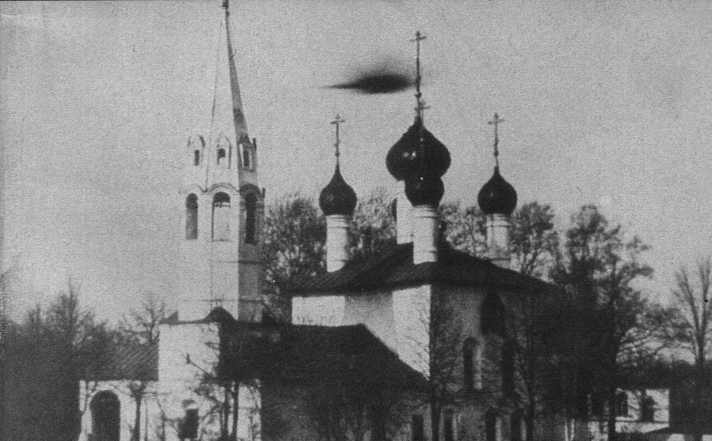
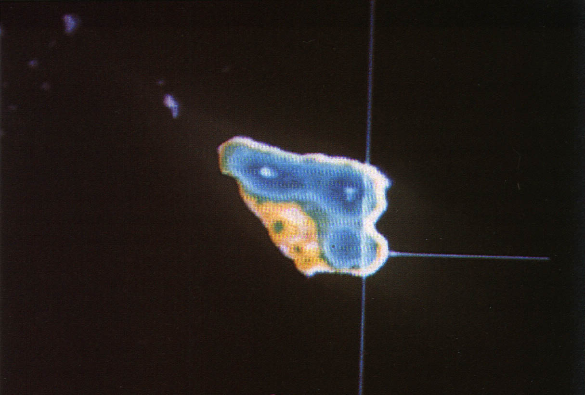
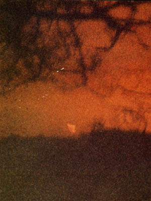

Photographie d'un ovni au-dessus d'une église à Jaroslavl, près de Moscou

Photographie (ci-contre) d'un ovni au-dessus d'une église à Jaroslavl (Russie), près de
Moscou.
Analyse du cliché de Tony Dodd par le GSW

L'ovni photographié par Tony Dodd

Tony Dodd photographie le phénomène ci-contre près de la ville anglaise d'Addingham (Yorkshire). Tirages et négatifs ont été analysés par le GSW, à l'aide de techniques de traitement informatique. La technique du découpage
par intensité (Density Slicing) a montré que l'ovni était en l'air, et situé au-dessus de l'horizon. La
granulométrie du film a été analysée par enrichissement de bordure (Edge Enhancement), indiquant
que l'objet n'était relié à aucun fil ou câble. Le GSW a pu identifier la vapeur entourant l'objet et situer l'ovni
dans une zone rectangulaire à droite du nuage vaporeux. Enfin, par une technique de définition des bordures colorées
(Colour Contouring), il fut confirmé que l'objet était sphérique. Conclusions du GSW : cet ovni semble structuré, son diamètre avoisine 9 m. Il s'agit de la
première photo confirmée d'ovni en Grande-Bretagne.